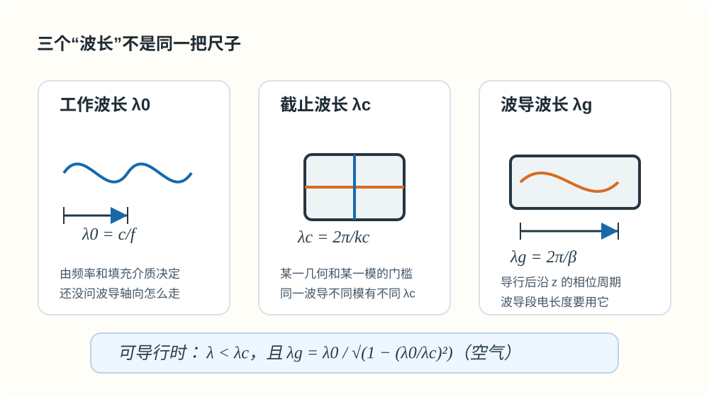

01 · 三种波长（$\lambda_0$，$\lambda_{\mathrm c}$，$\lambda_{\mathrm g}$）§
本节你要能回答什么§
- 三个「波长」量纲相同，各自描述的物理对象差在哪里？
- 空气与介质填充时，如何把「工作波长 / 波数」改写成同一条色散链？
- 导行条件用介质中的 $\lambda$ 与 $\lambda_{\mathrm c}$ 怎么写？空气中 $\lambda_{\mathrm g}$ 与 $\lambda_0,\lambda_{\mathrm c}$ 的显式关系是什么？
直觉：三个问题、三个尺度§
- $\lambda_0$：你在多高的频率上工作？对应无界均匀介质里与 $f$ 配套的空间周期（常取空气 $\lambda_0=c/f$）。
- $\lambda_{\mathrm c}$：对这一几何、这一模 $(m,n)$，临界能不能导行？只与截面与模有关，不随当前 $f$ 随意变（同一波导不同模有不同 $\lambda_{\mathrm c}$）。
- $\lambda_{\mathrm g}$：已经能导行时，沿 $z$ 轴相位走 $2\pi$ 要隔多远？由 $\beta$ 决定，不是 $\lambda_0$ 在轴上的简单平移。
可以把它们理解成三张不同的尺子：$\lambda_0$ 看信号本身，$\lambda_{\mathrm c}$ 看波导门槛，$\lambda_{\mathrm g}$ 看波导轴向。题目里一旦出现“沿波导量长度”“移动短路面”“驻波间距”，优先想到 $\lambda_{\mathrm g}$，不是 $\lambda_0$。

图：$\lambda_0$ 看工作频率，$\lambda_{\mathrm c}$ 看某一模的截止门槛，$\lambda_{\mathrm g}$ 才是导行后沿波导轴向的相位周期。
定义与符号表§
（1）工作波长 $\lambda_0$§
空气（$\varepsilon_{\mathrm r}\approx 1$）常写
$$ \lambda_0=\frac{c}{f},\qquad c\approx 3\times 10^8\,\mathrm{m/s}. $$
教材与作业中也常把无界介质中的波长记为 $\lambda$，与 $\lambda_0$ 混用——以题设为准。
介质填充（$\mu_{\mathrm r}=1$ 时常用）：$k=\omega\sqrt{\mu_0\varepsilon_0\varepsilon_{\mathrm r}}=k_0\sqrt{\varepsilon_{\mathrm r}}$，故同一频率下
$$ \lambda=\frac{\lambda_0}{\sqrt{\varepsilon_{\mathrm r}}}. $$
要点：$\lambda_0$（或介质中的 $\lambda=2\pi/k$）描述无界均匀介质里与频率配套的尺度；不是波导轴线上相邻等相位面间距——后者用 $\lambda_{\mathrm g}$。
（2）截止波长 $\lambda_{\mathrm c}$（某一固定 $\mathrm{TE}_{mn}$ 或 $\mathrm{TM}_{mn}$）§
与截止波数关系
$$ \lambda_{\mathrm c}=\frac{2\pi}{k_{\mathrm c}},\qquad f_{\mathrm c}=\frac{k_{\mathrm c}}{2\pi\sqrt{\mu\varepsilon}}. $$
空气近似下 $f_{\mathrm c}=c\,k_{\mathrm c}/(2\pi)$。矩形波导 $k_{\mathrm c}=\sqrt{(m\pi/a)^2+(n\pi/b)^2}$，故这里定义的 $\lambda_{\mathrm c}=2\pi/k_{\mathrm c}$ 只与 $a,b,(m,n)$ 有关。若题目讨论介质填充下的截止频率，要回到 $k=\omega\sqrt{\mu\varepsilon}$ 去算，不要机械套空气中的 $f_{\mathrm c}$。
导行条件（无耗均匀填充，$\beta$ 为实数）：
$$ k>k_{\mathrm c} \quad\Longleftrightarrow\quad \lambda<\lambda_{\mathrm c} \quad\Longleftrightarrow\quad f>f_{\mathrm c}. $$
若用空气中的自由空间波长 $\lambda_0$ 表示，并且 $\mu_{\mathrm r}=1$、均匀介质全填充，则条件可写成
$$ \frac{\lambda_0}{\sqrt{\varepsilon_{\mathrm r}}}<\lambda_{\mathrm c} \quad\Longleftrightarrow\quad \lambda_0<\sqrt{\varepsilon_{\mathrm r}}\,\lambda_{\mathrm c}. $$
若工作介质中的 $\lambda>\lambda_{\mathrm c}$，则 $\beta$ 为虚数，场沿 $z$ 衰减，模截止。
（3）波导波长 $\lambda_{\mathrm g}$§
$$ \lambda_{\mathrm g}=\frac{2\pi}{\beta}. $$
空气、无耗下由 $k^2=k_{\mathrm c}^2+\beta^2$ 与 $k=2\pi/\lambda_0$ 得
$$ \beta=\frac{2\pi}{\lambda_0}\sqrt{1-\left(\frac{\lambda_0}{\lambda_{\mathrm c}}\right)^2}, \qquad \lambda_{\mathrm g}=\frac{\lambda_0}{\sqrt{1-(\lambda_0/\lambda_{\mathrm c})^2}}. $$
在空气可导行区间 $\lambda_0<\lambda_{\mathrm c}$ 内，$\lambda_{\mathrm g}>\lambda_0$。近截止 $\lambda_0\to\lambda_{\mathrm c}^-$ 时 $\beta\to 0^+$，$\lambda_{\mathrm g}\to\infty$（理想无耗模型极限，能量速度等见教材）。
推导步骤（答题顺序）§
- 分别定义 $\lambda_0$、$\lambda_{\mathrm c}$、$\lambda_{\mathrm g}$（各一句话 + 主公式）。
- 写色散 $k^2=k_{\mathrm c}^2+\beta^2$，把介质中的 $\lambda$、$\lambda_{\mathrm c}$ 换成 $k,k_{\mathrm c}$，再推出 $\lambda_{\mathrm g}$。
- 若有介质填充，先写 $k=k_0\sqrt{\varepsilon_{\mathrm r}}$（及 $\mu_{\mathrm r}$ 若需），结构不变。
与截止、色散、模式指标的挂钩§
- $\lambda_{\mathrm c}$ 与 $(m,n)$ 绑定；比较「能不能传」时用同一模的 $\lambda_{\mathrm c}$。
- 轴向电长度、螺钉位置等用 $\lambda_{\mathrm g}$，见 Lec13–16 与作业附录。
易错点§
- 把 $\lambda_0$ 当成沿波导轴画驻波/行波的间距。
- 忽略导行区间条件就开方 $\lambda_{\mathrm g}$。
- 介质填充时仍用真空 $\lambda_0$ 代 $k$，未换 $k=\omega\sqrt{\mu\varepsilon}$。
Mini 自检题§
Q1：$\lambda_{\mathrm g}>\lambda_0$ 是否在截止区内也成立？
提示：截止区 $\beta$ 非实导行，一般不讨论实数 $\lambda_{\mathrm g}$；公式在 $\lambda_0<\lambda_{\mathrm c}$ 可导行时才有题中常用形式。
Q2：同一矩形波导，$\mathrm{TE}_{10}$ 与 $\mathrm{TM}_{11}$ 的 $\lambda_{\mathrm c}$ 是否一般相同？
提示：一般不同，因 $k_{\mathrm c}$ 与 $(m,n)$ 有关。
相关链接§
- 上一节：00-术语与路线图.md
- 下一节：02-色散相速与群速.md
- 作业题 1 · 三种波长：第三次作业解答 · Lec11～12